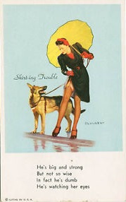
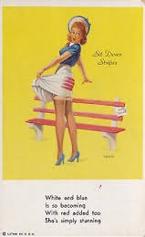
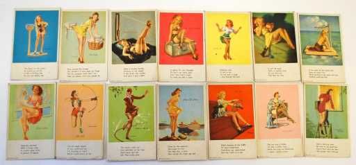

Facts and More!


There are a handful of Mutoscope “Pin-Ups” that can be found, which vary in rarity. They are typically cheeky and exhibit the dirty humor that was associated with the “peep-show” nature of the Mutoscope. Now referred to as “Peep-Machine Pin-Ups,” these mutoscope slides originated in the 1940-1950s.

A variety of short poems have been written about, or mention, the mutoscope. It is assumed that the peep-show-esque nature of the mutoscope intrigued many artists and poets, that led to the creation of these poems. The most known of these poems is Mutoscope by Elizabeth Spires, and is as follows:
Swirl and smash of waves against the legs
and crossgirders of the pier, I have come to Brighton,
come as the fathers of our fathers came,
to see the past’s Peep Show.
On two good legs, on one, they came,
veterans and stay-at-homes of the Great War,
all casualties, to stroll the West Pier’s promenade,
past bands, flags, and minstrel shows,
past Gladys Pawsey in a high-necked bathing costume
riding her bicycle off the high board,
past Hokey-Pokey and Electric Shocker,
to the old Penny Palace, pennies burning hotly
in their hands, the worn watery profile
of Queen Victoria looking away from it all.
I bend to the mutoscope’s lit window
to see “What the Butler Saw”: a woman artlessly
taking off her clothes in a jerky striptease
I can slow down or speed up
by turning the handle of the mutoscope.
Easily I raise her from darkness—
the eye eternally aroused by what it can’t touch—
to watch her brief repeating performance
that counts for so little. Or so much.
I can’t be sure which.
Abruptly, THE END shuts down the image, but her story
continues as she reverses time’s tawdry sequence
to dress and quickly disappear
down a maze of narrow streets and alleys
filled with the ghostly bodies and bodiless ghosts
of causality, the unredeemed and never-to-be-born
bearing her along to a flight
of shabby stairs, a rented room where she is free
as anyone to dream her dreams and smoke a cigarette,
smoke from the lit tip spiraling
in patternless patterns toward the room’s bare light bulb,
the light I see her by harsh, violently
unforgiving, as she makes tomorrow into a question
of either/or: to leave this room, this vacancy
forever, or go on exactly as she has before.
Old ghost, your history is nameless and sexual,
you are your own enigma, victim
or heroine of an act of repetition that, once chosen,
will choose you for a lifetime.
I peer into the tunneled past,
so small, so faraway and fragmentary,
and yet, not unconnected to what I am now.
Dilapidation upon dilapidation, Brighton
is crumbling, fading to sepia tones,
as your unfunny burlesque continues past
your life, perhaps past mine,
the past preserved and persevering,
the sentimental past.
Elizabeth Spires, “Mutoscope” from Annonciade(New York: Viking Penguin, 1989).